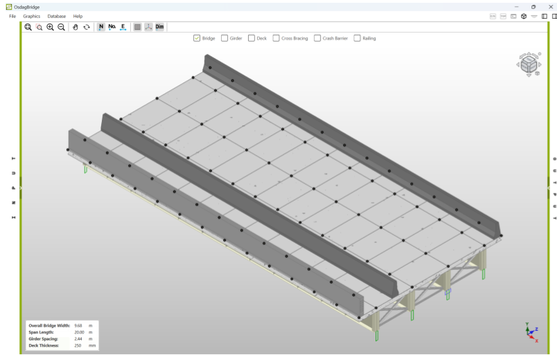

Steel bridge analysis & design, open source.
OsdagBridge is a modular, shared-core plugin for analyzing and designing short-span steel girder bridges, available as a desktop app, web app, and CLI — all backed by the same Python core.


Why OsdagBridge
A single core, reused everywhere — consistent results across every interface.
Shared Core Architecture
All numerical logic and I/O live once in osdagbridge.core, reused identically by the desktop GUI, web app, and CLI.
Modular Bridge Types
Plate girder bridges today, with box girder and truss types planned through a pluggable bridge-type architecture.
Reusable Components
Girders, decks, crash barriers, pedestals, piers, foundations, and pile caps shared across bridge types.
Multi-Solver Analysis
Switch between a native lightweight FEM solver, OpenSeesPy, and OspGrillage at runtime via adapters.
Indian Standards Built In
IRC:6–2017, IRC:22–2015, and IRC:24–2010 load models, combinations, material factors, and code checks.
Desktop, Web & CLI
Use the PySide6 desktop app, the Django + React web app, or automate everything from the command line.
See it in action
Screenshots of the Template page, 3D CAD and plots
 Template Page
Template Page

3D CAD Model Analysis Plots
Analysis Plots
Install OsdagBridge
Grab the installer for your platform, or build from source.
Windows
Download and run the .exe installer — no Python setup required.
Full walkthrough, prerequisites, and troubleshooting on the Installation page.